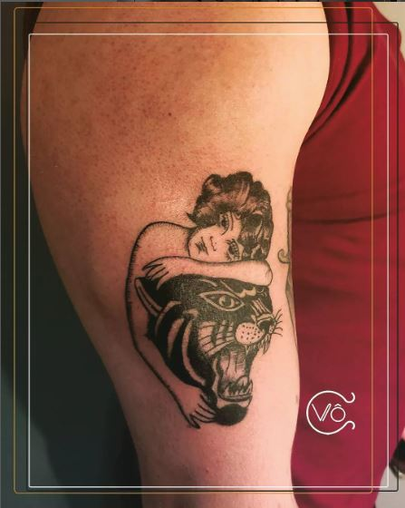
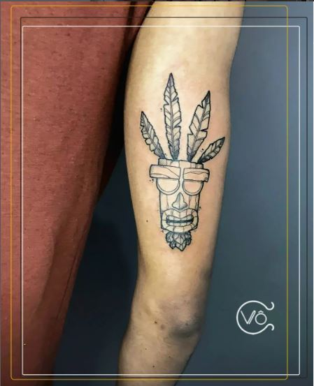
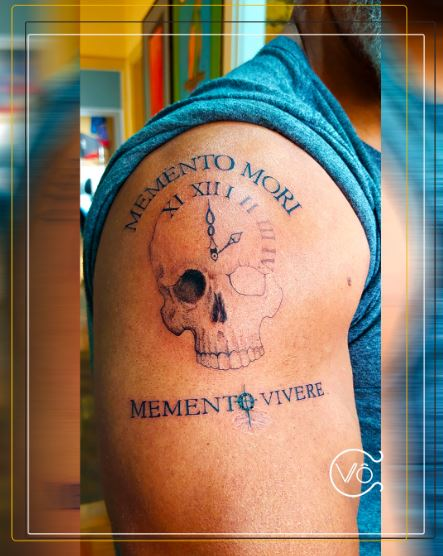

Prazer em conhecer
Somos um estúdio de tatuadores localizada no Tatuapé
Oferecemos além de diversos tipos de artes e estilos para tatuagem, alguns
cursos para aqueles que tem interesse de entrar dentro da área ou aprender a profissão por curiosidade.
Atualmente temos 3 profissionais trabalhando o Wilmar Gomes, Lukas Arroio
e Carol Araújo.
Venha nos conhecer.
É o clássico com cara de novo!